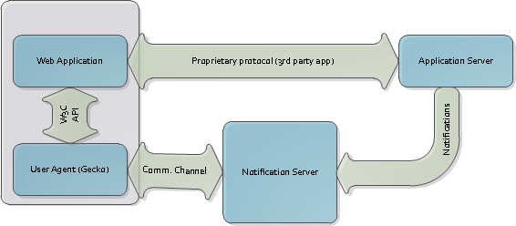
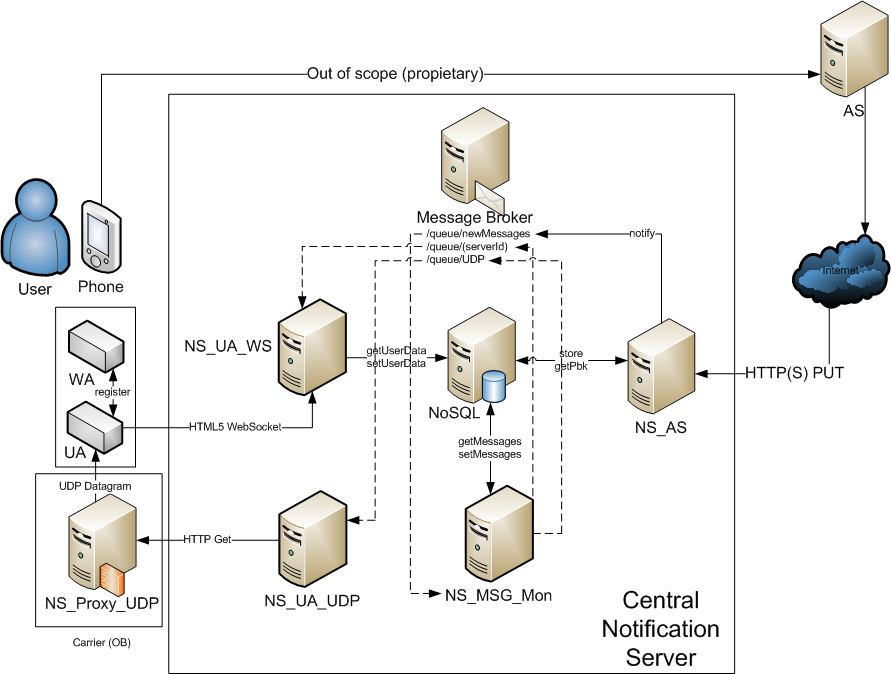

Table of Contents
The Notification Server API is based on the W3C draft: [http://dvcs.w3.org/hg/push/raw-file/default/index.html]
In order to understand this chapter, we'll present the different actors:
The user's applications which is normally executed on the user device.
Since this protocol born under the Firefox OS umbrella the "operating system" layer is known as the User Agent layer, in our case is the Gecko engine.
Centralized infrastructure of the notification server platform. This one can be freely deployed by anyone since it's open source: [https://github.com/telefonicaid/notification_server] . The protocol also allows to use any server infrastructure the user wants
The WA server side. Normally the applications that runs on a mobile device use one or more Internet servers.
Some of them will be deployed by the same developer as the client application.
In our case, this server will be the one which send the notification to his clients/users.
|  |
The following sequence diagram shows a tipical message flow between actors:
|  |
This API is mainly based on the W3C draft as specified in [http://dvcs.w3.org/hg/push/raw-file/default/index.html]
Also there is more information about Simple PUSH API here: [https://wiki.mozilla.org/WebAPI/SimplePush]
With this API the application is able to register notification channels itself into the Notification Server and recover the public URL to be used as the notification endpointURL by his Application Server (AS).
This API (under the navigator.push object) defines these methods:
This method allows the application to register a new channel.
navigator.push.register()
Finally this method will response asynchronously with the URL to be sent to the AS in order to be able to send notifications.
var req = navigator.push.register();
req.onsuccess = function(e) {
alert("Received URL: " + req.result.pushEndpoint);
};
req.onerror = function(e) {
alert("Error registering app");
}
This method allows the application to unregister a previously registered channel.
navigator.push.unregister(endPointURL);
After register the application into the Notification Server, all received notification through the given URL will be delivered to the WA registered channel.
Since the notifications will be received by the UA it's needed a way to notify each application. The current specification is using the new System Messages infrastructure defined in FirefoxOS.
In this case, the application shall register to the "push-notification" event handler:
navigator.mozSetMessageHandler("push", function(msg) {
alert("New Message with body: " + JSON.stringify(msg));
});
Inside the msg you'll receive the pushEndpoint URL so an app can register as many channels as it wants and with this attribute has a chance to differenciate one from another.
The complete example:
var emailEndpoint, imEndpoint;
// The user has logged in, now's a good time to register the channels
MyAppFramework.addEventListener('user-login', function() {
setupAppRegistrations();
});
function setupAppRegistrations() {
// Issue a register() call
// to register to listen for a notification,
// you simply call push.register
// Here, we'll register a channel for "email" updates.
// Channels can be for anything the app would like to get notifications for.
var reqEmail = navigator.push.register();
reqEmail.onsuccess = function(e) {
emailEndpoint = e.target.result.pushEndpoint;
storeOnAppServer("email", emailEndpoint); // This is the "Hand wavey" way that the App
// sends the endPoint back to the AppServer
}
// We'll also register a second channel for "im", because we're social and all about the socialists. Or something.
var reqIm = navigator.push.register();
reqIm.onsuccess = function(e) {
imEndpoint = e.target.result.pushEndpoint;
storeOnAppServer("im", imEndpoint);
}
}
// Once we've registered, the AppServer can send version pings to the EndPoint.
// This will trigger a 'push' message to be sent to this handler.
navigator.mozSetMessageHandler('push', function handlePushMessage(message) {
if (message.pushEndpoint == emailEndpoint) // Yay! New Email! Steve and blue can dance!
getNewEmailMessagesFromAppServer(message.version);
else if (message.pushEndpoint == imEndpoint) // Yay! An IM awaits. I wonder if it's Sam's IM?
getNewChatMessagesFromAppServer();
});
// to unregister, you simply call..
AppFramework.addEventListener('user-logout', function() {
navigator.push.unregister(emailEndpoint);
navigator.push.unregister(imEndpoint);
});